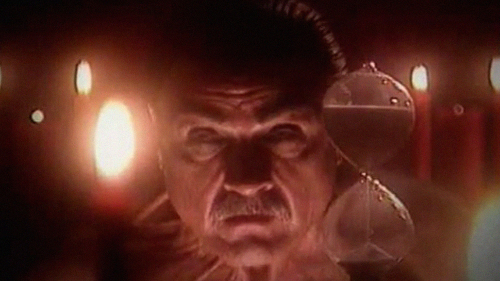

Martín Rivera (Sbaraglia), es un joven psicólogo que es contactado por un misterioso hombre llamado José Sagasti (Lito Cruz), quien pretende cobrarle una vieja deuda que dejó su abuelo al morir. Martín, por ser el primer descendiente varón, es el garante obligatorio para saldar dicha deuda, la cual consiste en entregarle su alma al diablo, depositando una gota de sangre en un viejo pergamino. El joven psicólogo inmediatamente descree de la fantasiosa historia y le recomienda a Sagasti que se haga tratar psiquiátricamente, mientras que Sagasti le advierte que si no paga esa deuda su vida será un verdadero infierno. Desde ese momento Sagasti, quien es realmente un representante humano del infierno, utiliza su riqueza y poderes extraterrenales para atormentar a Rivera, buscando de varias maneras que este último firme el contrato, lo que incluye controlar a sus amigos, atacar a su familia y seres queridos y lentamente empujar a "El Garante" a la desesperación. Al mismo tiempo Rivera, acorralado, descubre que todo lo que dijo Sagasti es cierto, y decide luchar por su alma.